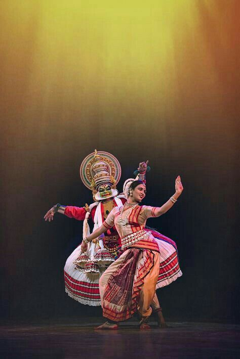
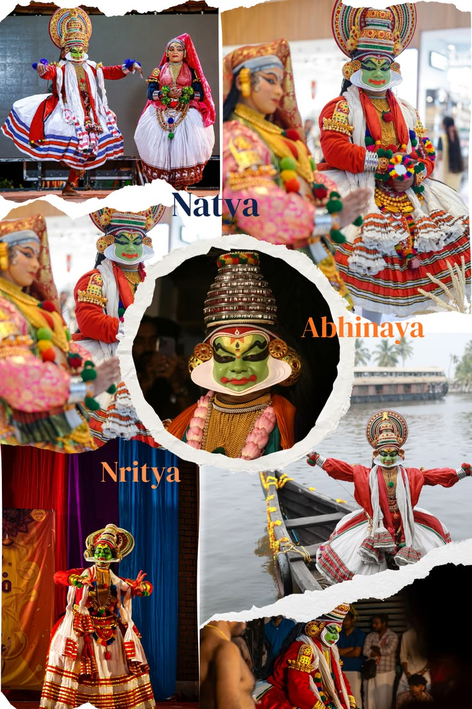
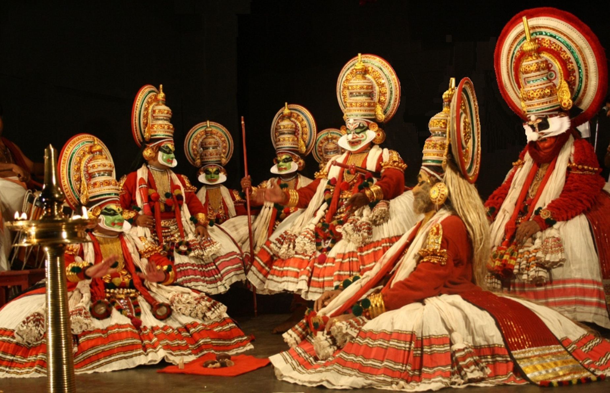

Kathakali is a traditional classical dance-drama from Kerala, known for its elaborate costumes, vibrant makeup, and expressive storytelling. It combines dance, music, and acting to depict stories from Indian epics like the Ramayana and Mahabharata.
The performers wear detailed face makeup and large costumes that represent different characters such as heroes, villains, and divine beings. The dance is famous for its powerful facial expressions and hand gestures (mudras).
Kathakali performances are usually accompanied by traditional music and percussion instruments like chenda and maddalam.
Kathakali originated in the 17th century in Kerala. It developed from earlier temple and folk art traditions. Over time, it became a major classical dance form representing the cultural heritage of South India.
Abhinaya: Expression through face and body.
Hasta Mudras: Hand gestures for storytelling.
Costume: Heavy and colorful traditional attire.
Makeup: Detailed face painting representing characters.


